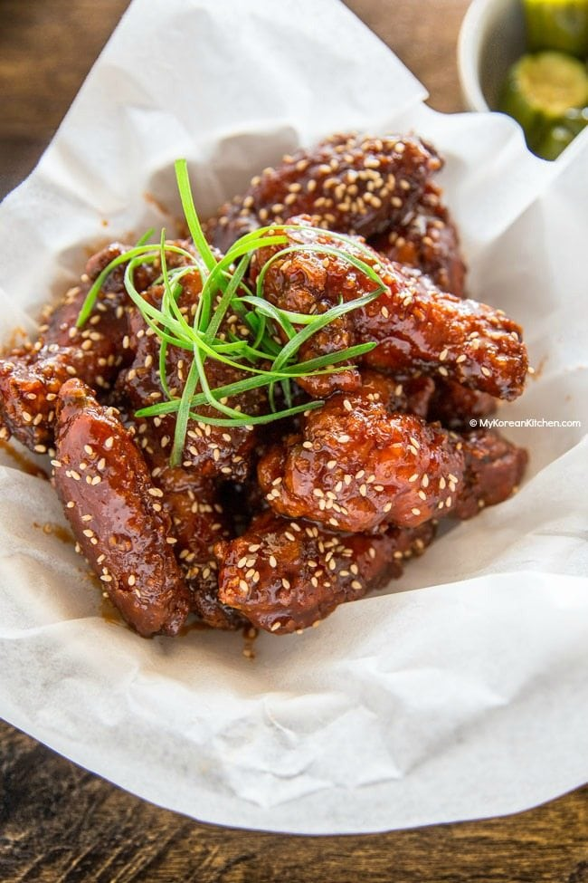

Korean Fried Chicken

Korean Fried chicken could be described as a thin, crackly and almost
transparent crust". The chicken is usually seasoned with spices, sugar,
and salt, prior to and after being fried.
Ingredients
-
1.4 kg / 3 pounds whole chicken, cut into pieces or chicken wings /
drumsticks / boneless chicken thigh choose from these based on your
preference, rinsed
- 2 Tbsp rice wine
- 2 tsp minced ginger
- 1 tsp fine sea salt
- 1/2 tsp ground black pepper
- 1 cup potato starch or corn starch
- Some cooking oil for deep frying (I used rice bran oil)
KFC Sauce
- 3 Tbsp tomato sauce / ketchup
- 2 Tbsp to 2 1/2 Tbsp gochujang (Korean chilli paste)
- 1/4 cup honey
- 1/4 cup brown sugar
- 2 Tbsp soy sauce
- 2 Tbsp minced garlic
- 1 Tbsp sesame oil
Optional - To Garnish
- roasted sesame seeds
- green onion, finely chopped
Method
-
n a bowl, place the chicken, rice wine, ginger, salt and black pepper.
Combine them well. Then evenly coat the chicken with the starch and set
side. (To get the effect like the below picture, dip the individual
chicken pieces into the bowl of starch, roll the chicken around a bit
then take them out and set aside.)
-
2. In a deep saucepan (or frier) add a generous amount of oil and heat
it until the oil temperature reaches 175 C / 347 F (or boiling). Start
adding the battered chicken carefully and fry them until they cook
(between 3 to 5 mins, depending on the size of chicken). Do not
overcrowd the pan
-
In a separate saucepan, add in the Korean fried chicken sauce
ingredients (listed above). Heat the sauce over low to medium heat and
stir well. Once it starts bubbling, remove the pan from the heat. Place
the double fried chicken into a large mixing bowl then pour the fried
chicken sauce over the chicken to coat. Mix them lightly and thoroughly.
Alternatively, serve the fried chicken and the sauce separately and use
the sauce as a dipping sauce. Once all the chicken is coated with the
sauce, serve it hot immediately. Leftover chicken can be refrigerated
for a day or two and eaten cold. But it won’t be as crunchy.